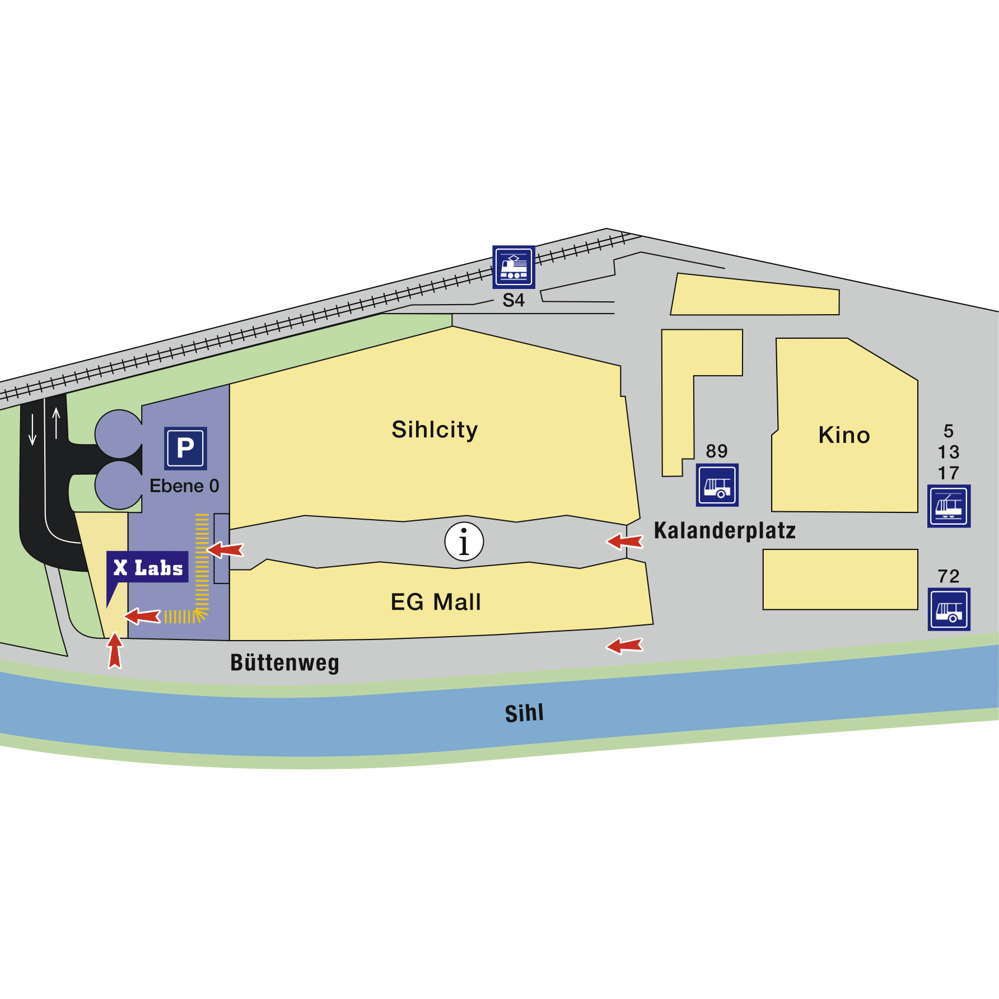
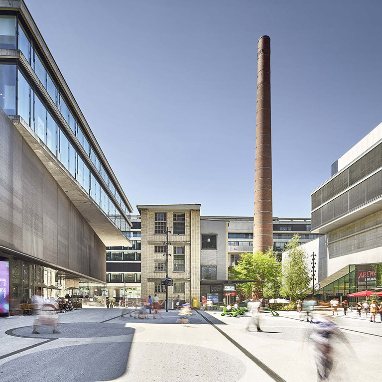
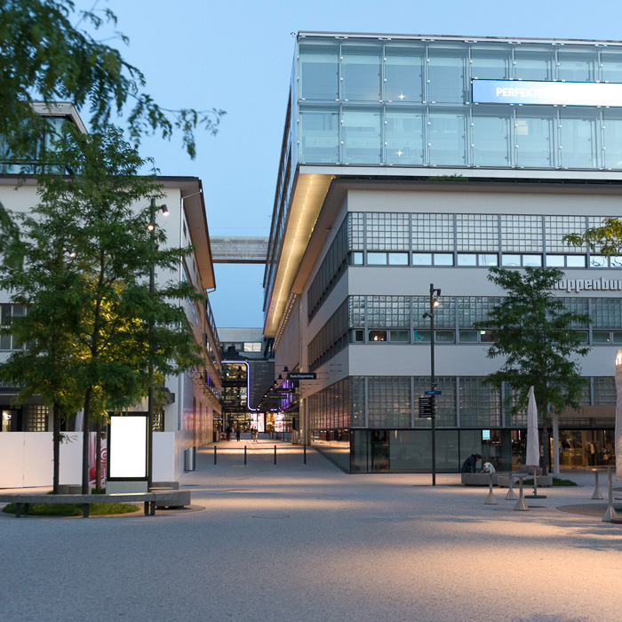
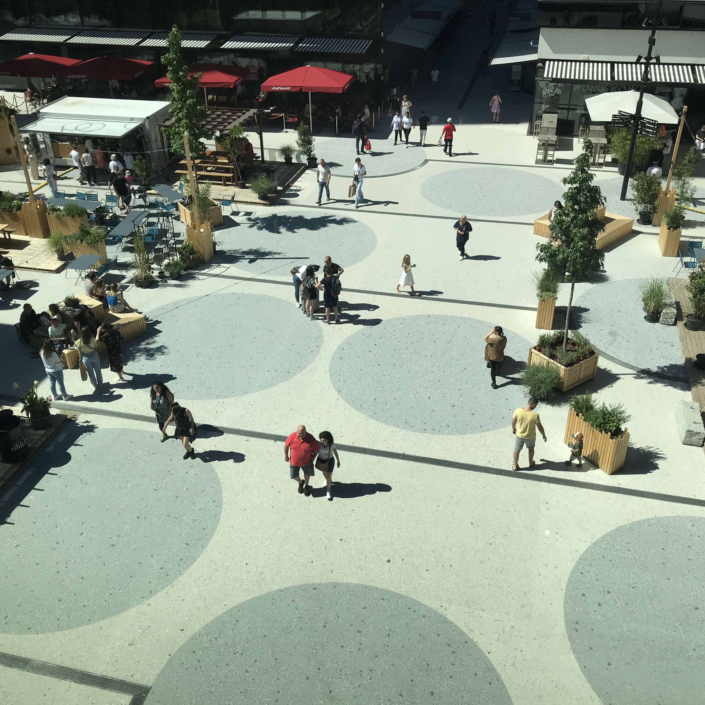
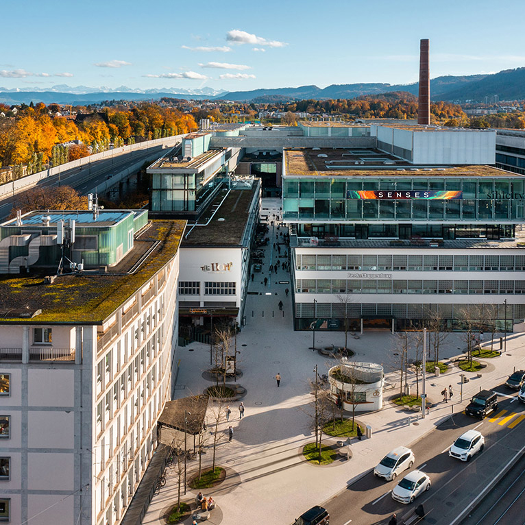
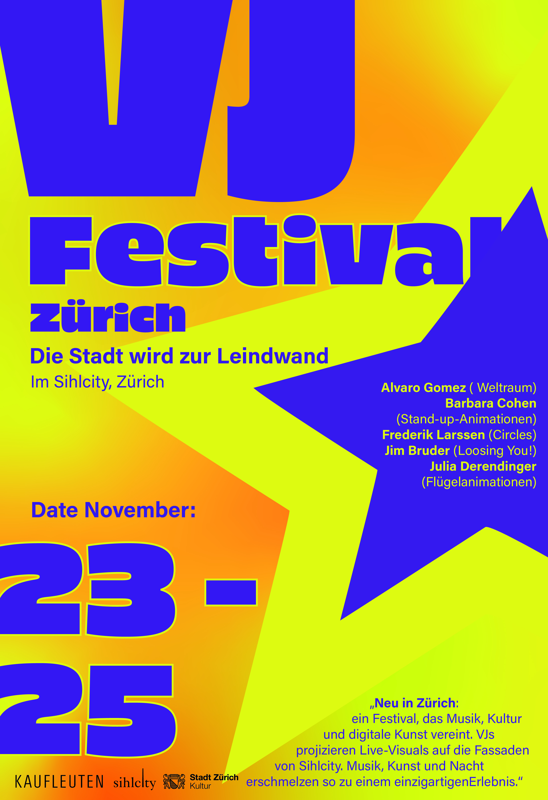

Shilcity – Zürich
Mehr als nur ein Festival
23.–25. November 2026
Das VJ Festival Zürich bringt Musik, visuelle Kunst und kreative Menschen an einem Ort zusammen. Mit beeindruckenden Projektionen, aufregenden Sounds und einer einzigartigen Atmosphäre verwandelt sich Sihlcity in eine bunte Erlebniswelt.





